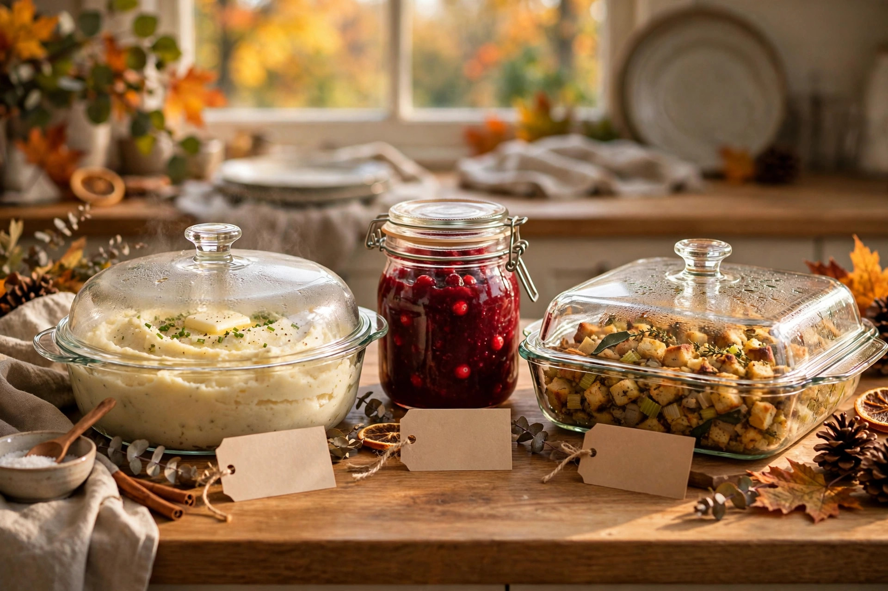

Make-ahead sides that carry the meal

Here's an open secret of great Thanksgiving hosts: most of the meal isn't cooked on the day. The turkey needs the oven on the holiday, but nearly every great side is either better made ahead (flavours settle, textures set) or reheats so well that no guest could tell. The sides below are the backbone of a calm Thanksgiving — make them on Sunday (per the long-weekend timeline), and Monday becomes a day of reheating and roasting instead of chaos.
The all-stars: make these fully ahead
Cranberry sauce
The undisputed make-ahead champion. Cook it up to three days early; it thickens as it cools and the flavour deepens. Fresh or frozen cranberries both work. Store it covered in the fridge and serve it cold or at room temperature — it never sees the oven on Monday.
Gravy base
Gravy causes more day-of stress than any side, and almost all of it is avoidable. On Sunday, simmer a rich base from turkey wings or good stock, onions, and herbs, then refrigerate. On Monday, whisk it back to a simmer and stir in the turkey drippings — you get drippings-flavoured gravy in ten minutes instead of starting from scratch while the turkey rests.
Stuffing (dressing)
Assemble the stuffing fully on Sunday — sautéed aromatics, broth, herbs, bread cubes — and refrigerate it in the baking dish, covered. On Monday, bring it to room temperature while the turkey rests, then bake covered with a splash of extra broth. Uncover for the last 15 minutes for a crisp top. It reheats better than almost anything on this list.
Mashed potatoes
Mash them Sunday with plenty of butter and warm milk, then refrigerate in an oven-safe dish. Monday: warm them in the oven covered with foil, or reheat gently on the stove with more warm milk and butter, stirring until fluffy. The milk-and-butter ratio is forgiving — add a little more than feels necessary, since reheating firms them up.
The strong supporting cast
- Pie and roll dough — make Saturday, rest overnight, bake Sunday. Pie in particular needs hours to cool and set.
- Roasted root vegetables — par-roast Sunday (about 80% done), refrigerate, and finish in a hot oven Monday while the turkey rests. They crisp up beautifully the second time.
- Green bean casserole or braised greens — assemble fully Sunday, bake Monday. The topping goes on at the end either way.
- Sweet potato casserole — same story: assemble Sunday, bake Monday, add any marshmallow or pecan topping in the last stretch.
What NOT to make ahead
Some things genuinely suffer from waiting:
- Fresh salads — dress them at the last minute so nothing wilts. You can wash and chop the components a day early, but keep the dressing separate.
- Anything meant to be crisp — roasted Brussels sprouts, fried onions, fresh bread rolls. Crispness is a day-of phenomenon.
- Whipped cream — whip it Monday. It takes five minutes and deflates overnight.
The reheating game plan
The oven is the bottleneck on Monday, so stagger: while the turkey rests (30 minutes, remember), the oven is free for stuffing and potatoes. Use the stovetop for gravy and the microwave for small dishes without shame — a microwave-warmed side that tastes great beats an oven-logjammed side that arrives late. Cover everything with foil to keep it from drying out, and add a splash of broth, milk, or water when reheating anything that looks dry. Heat is forgiving; dryness is not.
Keep readingNext: potluck Thanksgiving that actually works →